Meet the team
The flock.
UQ Business School Learning Design, and friends, as ducks. Each one is built from its owner's answers to twenty questions. This wall is a snapshot from the day the app retired: 26 ducks, as they were.
LD Flock
14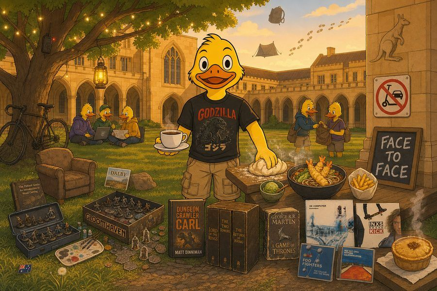
AndyEmbedded Language Support Officer Grew up in Dalby in the eighties, which he describes as Stranger Things and Twin Peaks with a splash of X-Files. Paints miniatures, plays board games and is currently working out bread. Rarely gets stressed or angry, which is either a superpower or a very long fuse. Talk to him face to face, and not after ten, because he will be asleep.
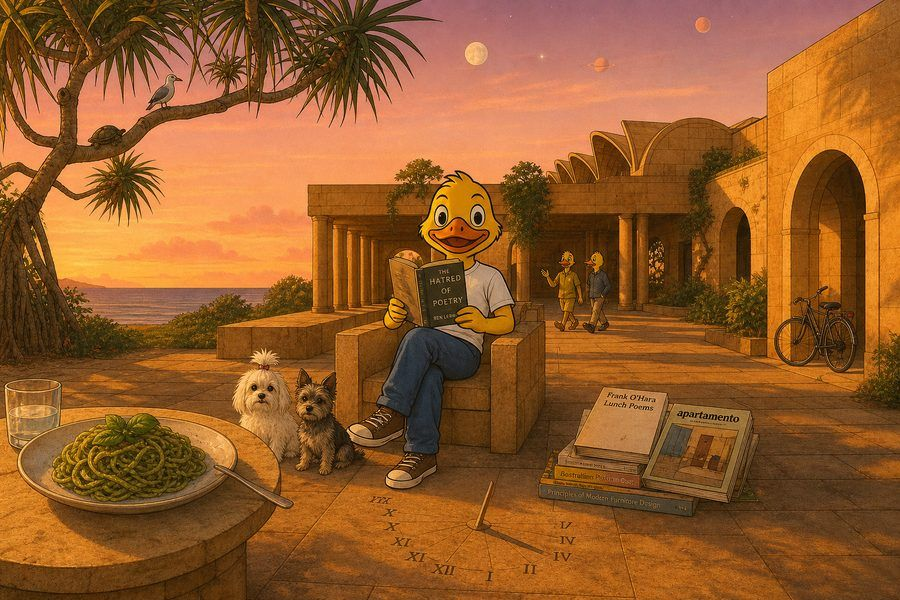
AnnaLearning Design Officer Spent the better part of a decade researching contemporary poetry, and emerged with more questions than answers. Lives in the clouds (geographically and otherwise) in Maleny, ft. Maple the terrier, who only answers to ‘Gorgeous’ and behaves accordingly, and Minti, an 18 yr old terrier who has sensibly given up on everything but TV. Slowly renovating a house while coming to terms with the limits of transferable skills. Believes strongly in the motivational effects of a well-designed room.
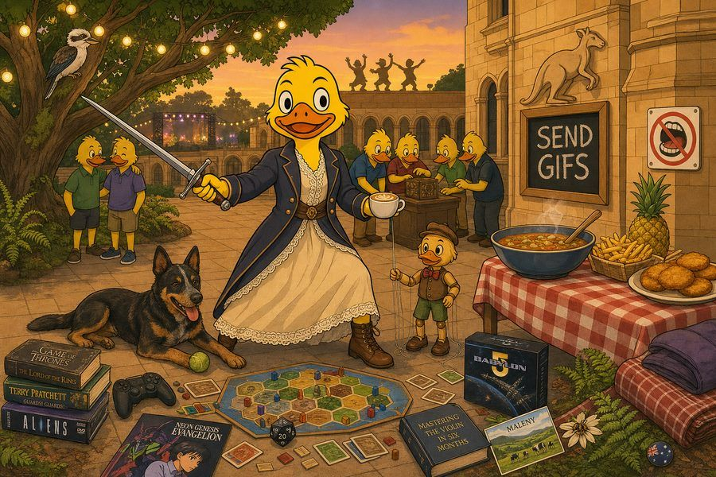
BeeeLearning Officer Shaped by Maleny, sustained by puzzles that will not come apart easily. Does HEMA swordfighting and brings marionettes to life. Shares custody of Jet, a kelpie cross who failed as a foster and succeeded as the world's laziest working dog. Communicates largely in GIFs. Goes flat when the work turns dull, so hand her the tricky one and say when it lands.
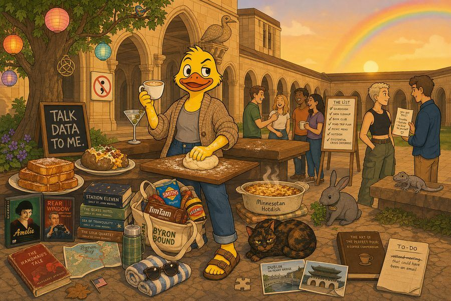
Carrie FinnSenior Manager, Learning Design From the American midwest by way of Ireland. Bakes, and is still chasing a better loaf. Runs on rage and small wins in roughly equal measure, notices the moment anyone gets a haircut, and will not forgive a misused semicolon. Tell her plainly what you want and why, and she is very hard to stop.
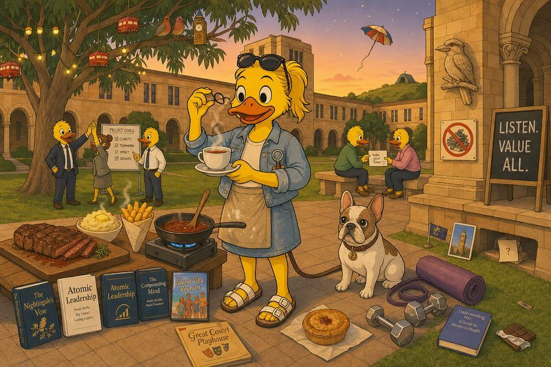
Chelsea JarvisPrincipal Learning Designer Chelsea is Principal Learning Designer, born and bred in Brisbane, with time in London helping shape her outlook. Outside work she's at the gym or walking the waterfront with her French bulldog Zsa Zsa, a real life 'Stitch' who guards the house like it's her own jail yard. Ideal weekends involve camping on the beach, and she's currently levelling up her cooking skills. She's energised by genuine connection with colleagues and working towards shared impact, so she thrives on face to face chats where every perspective gets heard.
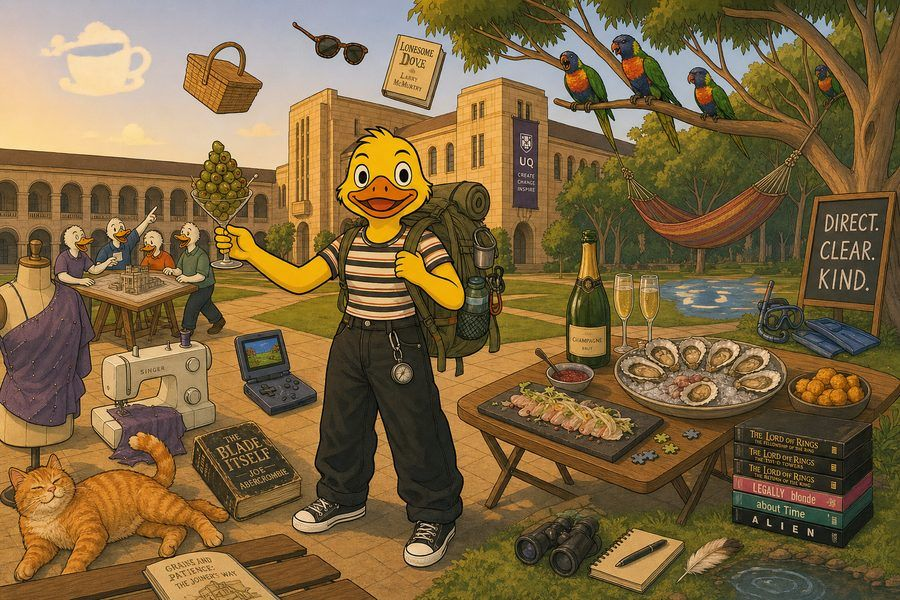
EvangeleneLearning Design Officer Sews her own clothes and loves to watch movies with her cat Phil. Her ideal weekend runs from an early morning wild swim to sunset oysters and cocktails with a view. Thrives off process, and wants direct communication. Will always prefer a face to face conversation, but will run from co-editing a document in meeting. Has an iron-stomach (vomit free since 2016), and WILL cry if you cry.
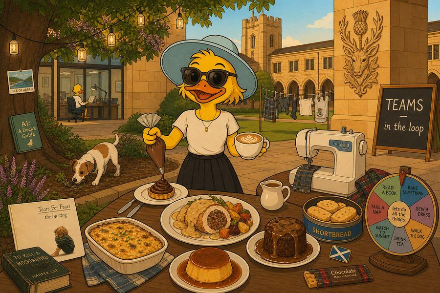
FionaLearning Designer From Scotland, married on the Isle of Arran, and firmly of the view that she is the most boring person she knows. The evidence against her includes a Rubik's cube solved in under ten minutes, a dream to do a chocolatier course in Belgium, and a Jack Russell cross called Milo who eats better than she does. Works best in the quiet before the office fills up. When too many things are competing at once, a Teams message helps her pick one.
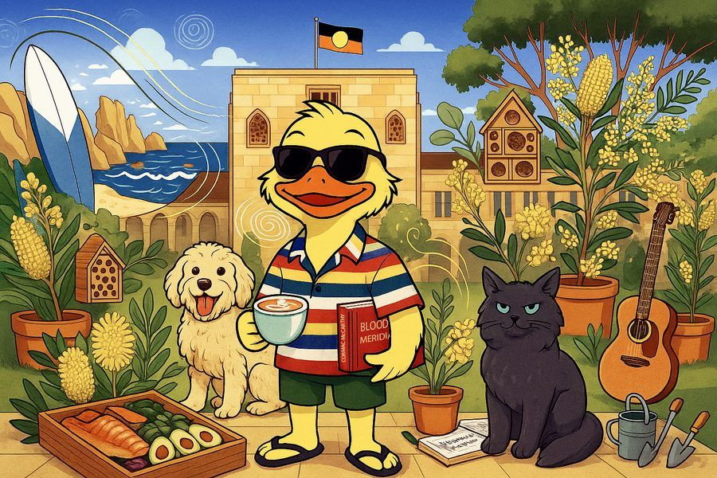
Greg DocwraMedia Production Coordinator Gardens, surfs, walks the beach, and is teaching himself motion design and native bee-keeping. Lives with Lucy the groodle, who is uncomplicated, and Millie the cat, who is aloof and manipulative and has more personality than either. Reads Blood Meridian, would like to build guitars, and goes quiet when the work turns into busy work. Best caught in person, and never in a supermarket aisle.
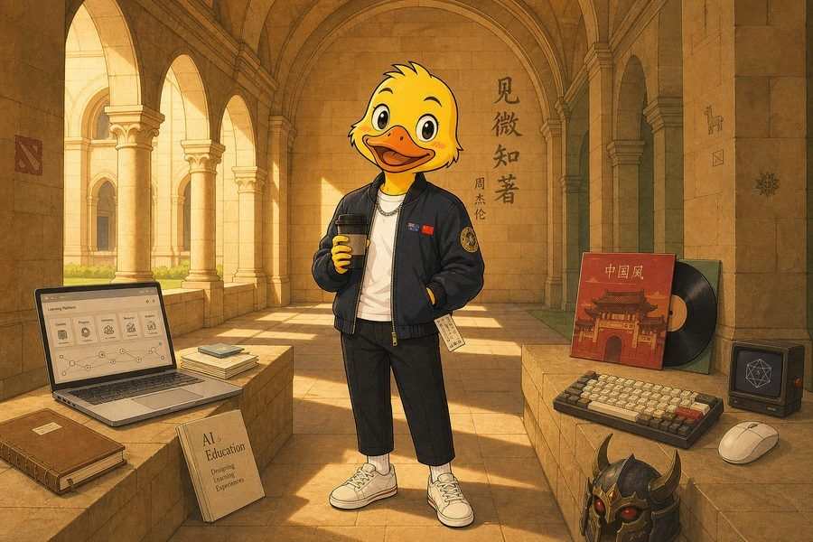
Michael LinPrincipal Learning Designer From northeast China and shaped by Tianjin, then Brisbane, Michael reads PC hardware reviews for fun and has more than two thousand hours in Dota 2. He runs on skinny flat whites and green tea, would point a last meal at Qiqihar BBQ, and grew up with a much-missed fluffy white Turkish Angora. His idea of a small joy is finding a good boombap track in a random playlist, and his superpower is travel planning, especially best-value hotels. Send him the insights and the interesting finds; the only thing that slows him down is an uncomfortable mouse and keyboard.
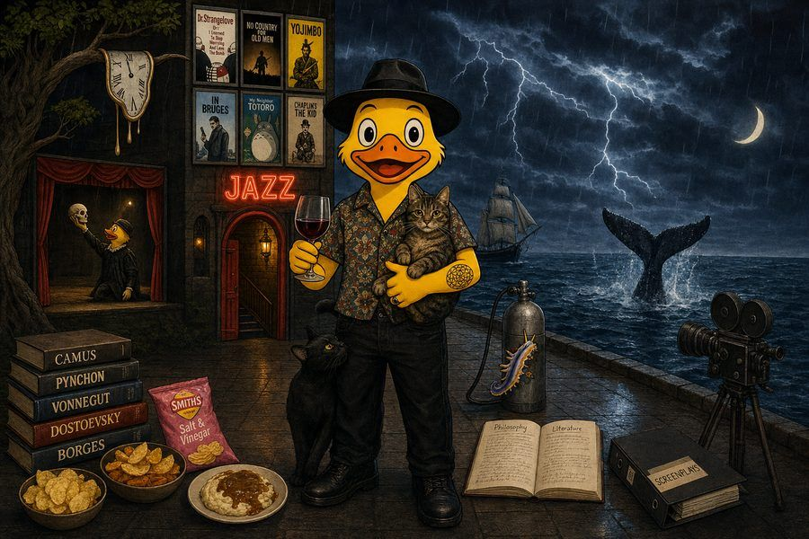
Ryan WatersPrincipal Learning Designer Writer and filmmaker. Inspired by his loving wife, art, nature, and a good tempranillo or peaty whiskey. Happily enslaved to two cats: one a deep thinker, the other a playful charmer. Misses sailing and scuba diving. Claims two superpowers: hugging, and picking the fastest lane of traffic. Believes most meetings can be an email, so incidentally writes very long emails (sorry!).
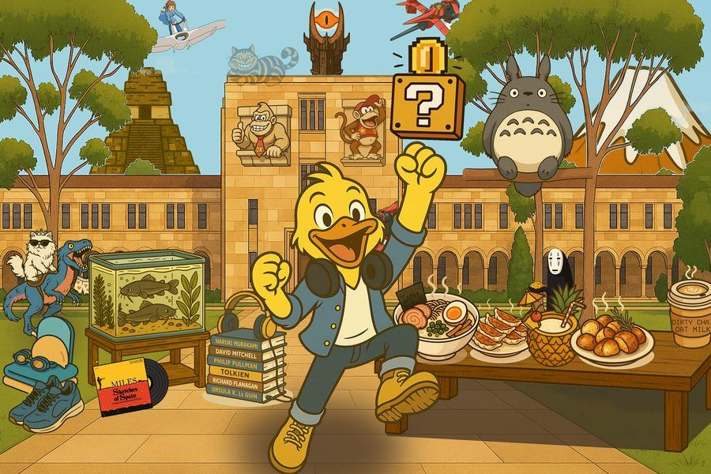
Sean MitchellPrincipal Learning Designer Listens to audiobooks, is learning Spanish and drawing, and keeps a tank of plecos, cherry shrimp and one mystery snail. Drinks piña colada, served in a pineapple. Likes meetings that make something rather than meetings about making something, and wants deadlines and expectations said out loud. Finds the hard part of the job is talking academics into things they have no interest in doing. Knows, without looking, the exact moment the microwave is about to beep.
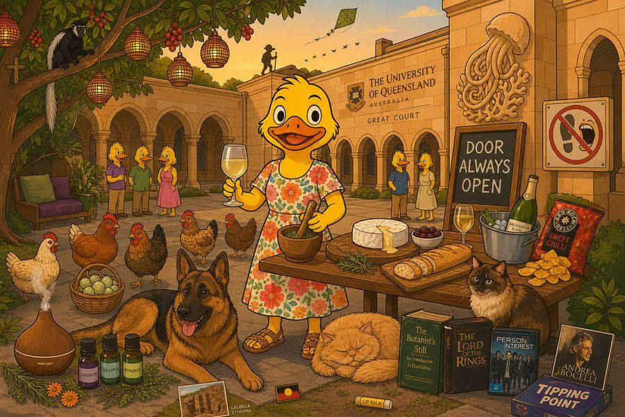
Tricia HicksEmbedded Language Support Officer Originally from Townsville, shaped by travel. Cares for a co-dependent German Shepherd, two Persian cats and six chickens that lay green eggs. Is a qualifies clinical aromatherapist and herbalist who, blends her own aromatherapy oils and formulates body care products. Her door is always open, though a loud room wears her down. Her children say her superpower is encouragement, which sounds about right.
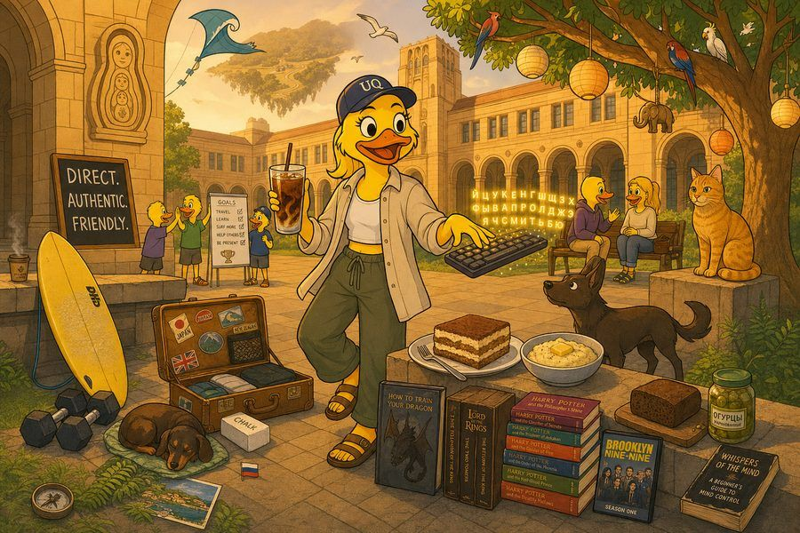
Vera IushinaLearning Designer Vera is a Learning Designer who grew up in Russia and has never met a place she didn't want to explore, always chasing new cultures and people. Outside work she's surfing, hitting the gym or planning her next trip, ideally somewhere in the hinterland or by the beach. Home is a full house with Peanut the dachshund, Luna the rescue kelpie cross lab and Sir Pickle the Grasshopper Slayer, undisputed king of it all.
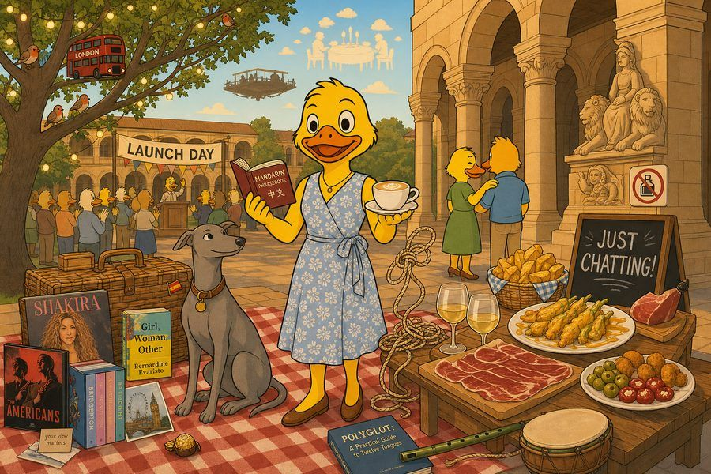
Victoria Rosa SturleyManager, Learning Design Projects Madrid, then London, now here. Learning Mandarin, and would happily collect a dozen more languages. Comes alive at launches and big meetings. Loves a chat, but would rather book a meeting for anything that can't be solved in 2 min. Unties knots, the literal kind. As she puts it, she does not need to be right, she needs to be supported.


Friends of the Flock
12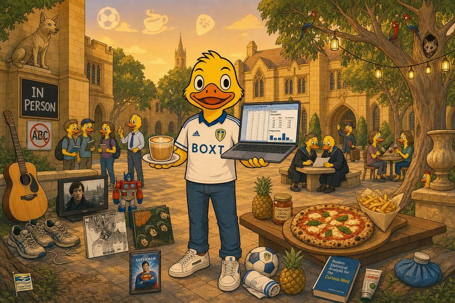
Aaron TkaczynskiSenior Lecturer Grew up on the Fraser Coast among the trees around Maryborough, and still runs, plays guitar and drinks a great deal of coffee (flat white, when he is not misspelling it as wine). Watches football in a Leeds United jersey and British crime dramas in between, with Revolver and Rubber Soul on rotation and Generation 1 Transformers close to his heart. Energised by motivated students, a paper in progress and a new country to visit. Hates acronyms and a sore body after the gym; loves slapstick. Best supported over a long conversation, coffee or wine.
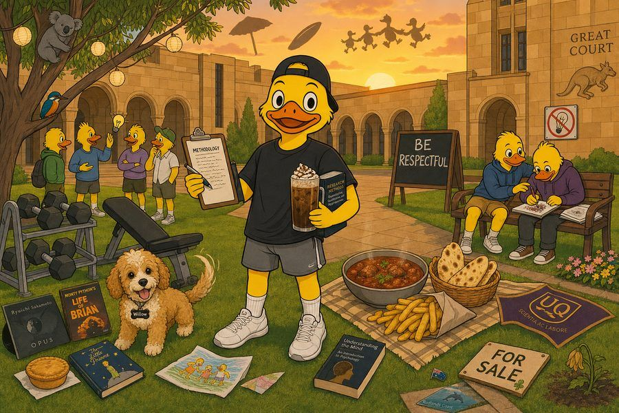
Blake StocktonLecturer Redlands raised and shaped by K'gari, Blake is a gym regular with a smart little Spoodle called Willow and two small children who bring him joy. He runs on double-shot iced mochas, would pick a vindaloo for a last meal, and says nothing energises him at work quite like Greg Docwra. Talking things through is how he works best, and he is, by his own admission, lucky in real estate.
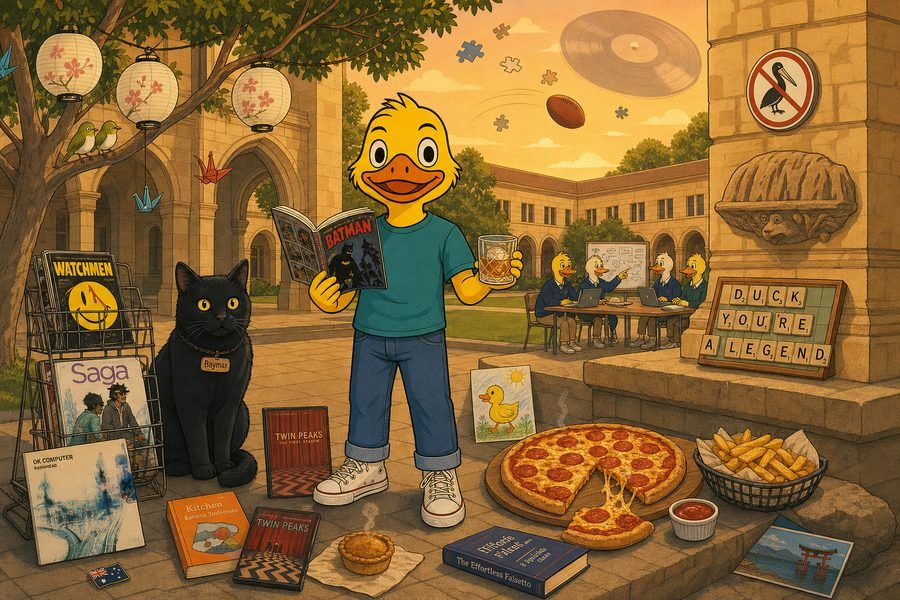
Chris Newcombe Shaped by Wakayama in Japan, Chris reads comics, follows the footy and unwinds with whiskey and obscure live band recordings on YouTube. He shares his house with a giant black cat called Baymax and his little love, his son. Collaborating with people who care about students is what energises him, and he has strong views on pelicans.
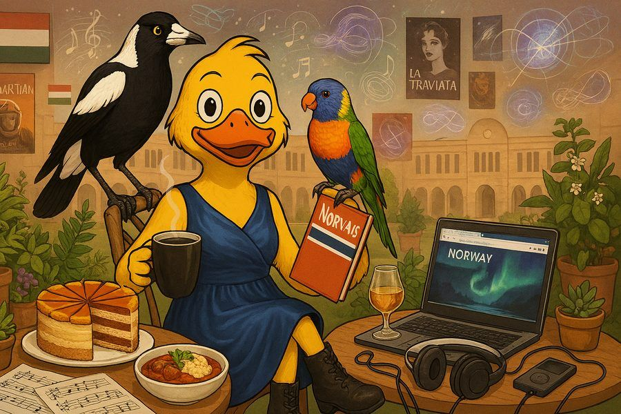
Emma Somogyi London born, Hungarian and Scottish by blood, and shaped by living in Prague, Emma makes music, is learning Norwegian and keeps googling trips to Nordic countries. She has been adopted by a family of magpies and a pair of rainbow lorikeets, has a green thumb to match her love of plants, and is at her best when she is flat out and making a difference to students. Send her the links, the articles and the ideas to ponder while she sips a sweet black coffee, or snacks on lemon sorbet.
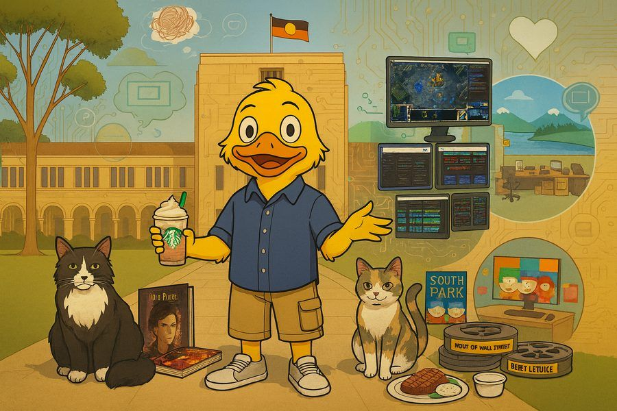
Geoffrey Blazer Bay Area born and shaped by New Zealand, Geoffrey plays Starcraft II and is building out a home lab one Ubuntu install at a time. His drink order is a venti pumpkin spice frappuccino with whip, and he answers to Boots, a huge yet loving tuxedo cat, and Daisy, a sassy calico often mistaken for a kitten. Give him a prompt and let him cook: something awesome comes back within 0.5 to 60 business days.
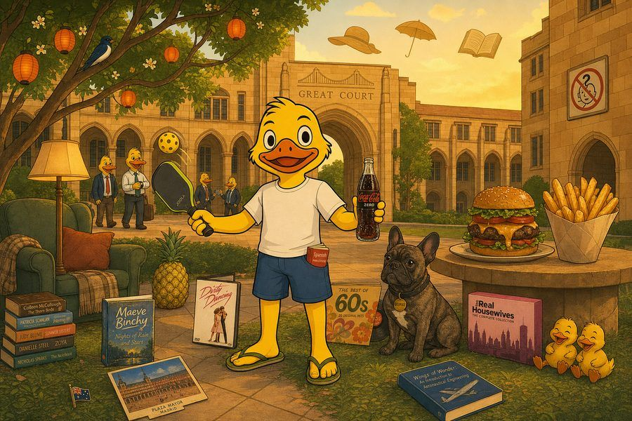
Lisa Ruhanen Brisbane born and shaped by Madrid, Lisa is learning Spanish and pickleball, though her ideal weekend is a beach, a book and no conversation at all. She shares her life with her three kids and George the French bulldog and her go-to after work TV fix is the Real Housewives. Last meal: a cheeseburger, with hot chips.
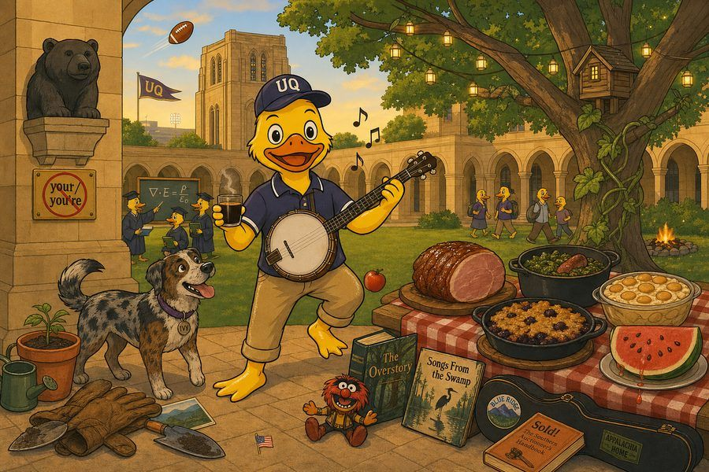
Richard O'Quinn Appalachian born and, by his own account, never quite escaped from it, Richard gardens, watches US college football and is learning the banjo. He runs on long blacks, caffeine and water only, and shares his patch with Ivy, a twelve-year-old RSPCA mutt. If he drops something, he will catch it before it lands.
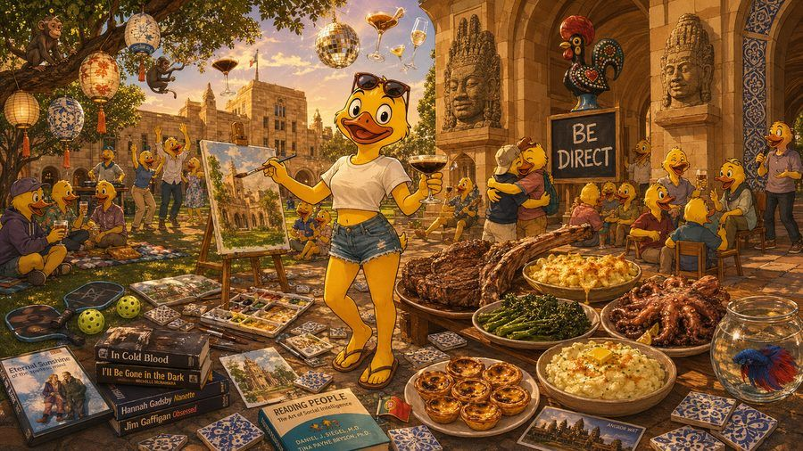
Sandra Figueira From Portugal and shaped by Cambodia, Sandra plays pickleball and spends her ideal weekend drinking cocktails and dancing with friends. She keeps a beta fish, reads social clues like a professional, and would much rather you were direct with her. Her last meal runs to a tomahawk steak, cheesy potatoes and octopus from the oven.
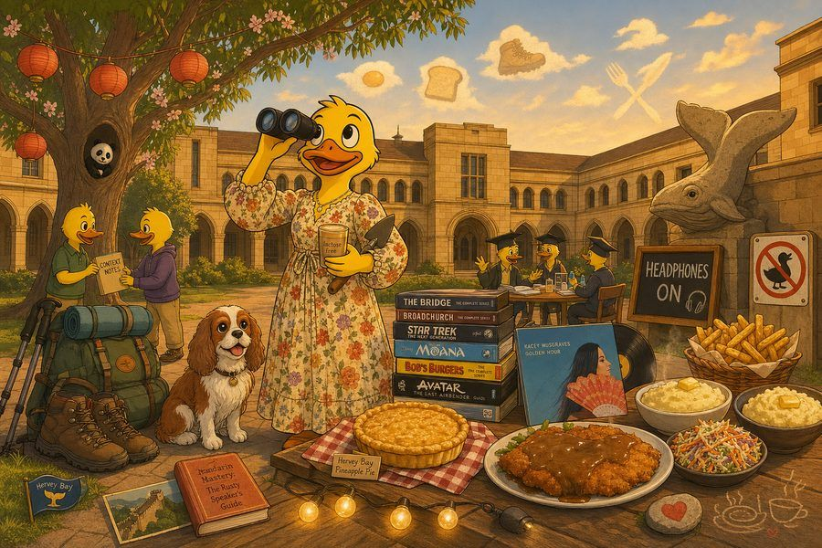
Sarah Woodland From Hervey Bay and shaped by her time in China, Sarah speaks Chinese (rusty, she insists) and is happiest with a good breakfast, a long hike and a chicken schnitzel with mash. Interesting conversations with academics about what they want to try in their courses are what energise her, and she does her best work when she has the full picture of who a job is for and why. Birdwatching, horticulture and wildlife caring are next on her list to learn.
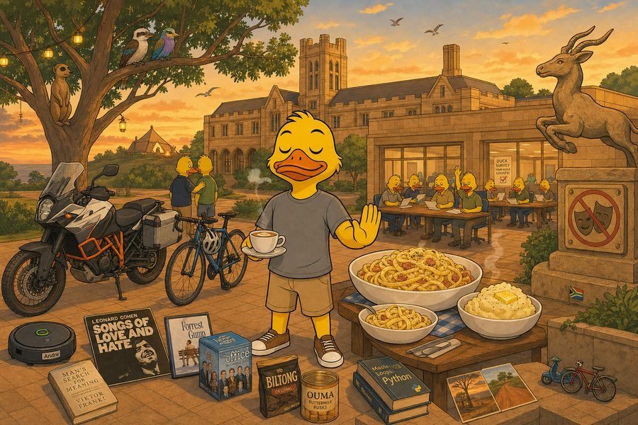
Sarel Gronum Born in Pretoria and solar-powered by the Southern Hemisphere sun, Sarel is a motorbike enthusiast, beach camper, proud grandfather to two princesses, and devoted owner of Andre, his robot vacuum and only dependent. He’s working on counting to ten before getting angry, runs almost entirely on flat whites and industrial quantities of pasta, and once had the physical endurance to justify both.
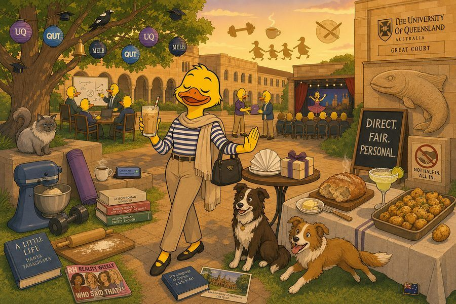
Stacey VogelSchool Manager Two kids, two dogs and a very cranky cat, Stacey spends her time keeping them all alive and thriving, on a diet of coffee, margaritas and coke zero in a glass bottle. She is energised by working with people, creating high-performing (and fun!) teams, loves hosting a long lunch, knows how to fold a napkin in the shape of a christmas tree and loves a perfectly wrapped gift (both giving and receiving).
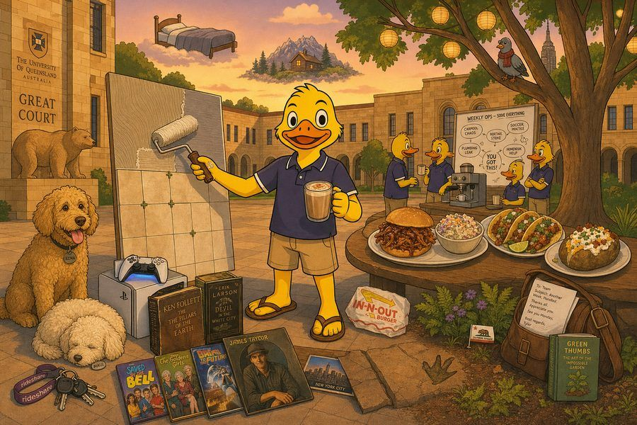
Tyler Okimoto A Californian shaped by New York City, Tyler spends his weekends Ubering children around, learning to renovate his own bathroom and escaping to the hinterland. He runs on dirty chais and his coffee machine, walks Kona the groodle and Maui the pooshon, and writes really good emails with proper grammar and no Copilot.


Fancy a duck of your own?
The app is gone but the recipe is not. Download the kit, paste it into Claude or ChatGPT, answer the twenty questions, and take the prompt it writes to an image tool with the template attached. Ten minutes, one duck. Send it to whoever looks after this page and it can join the wall.